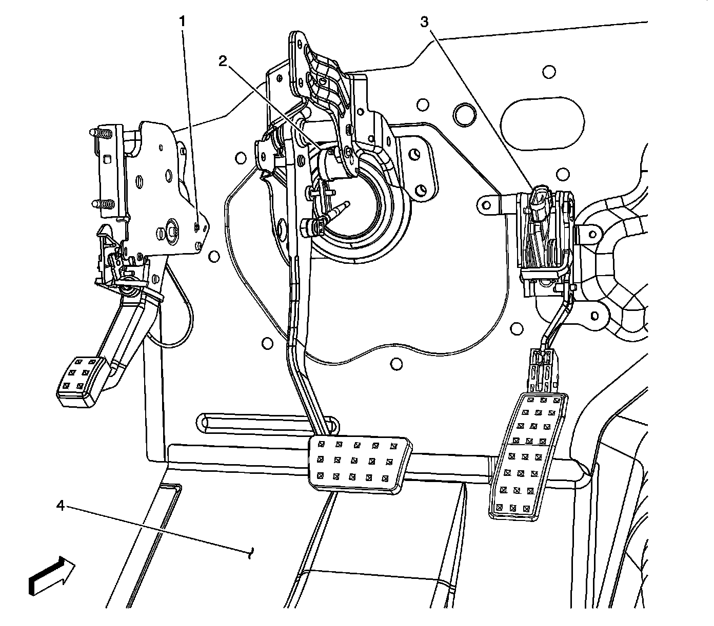
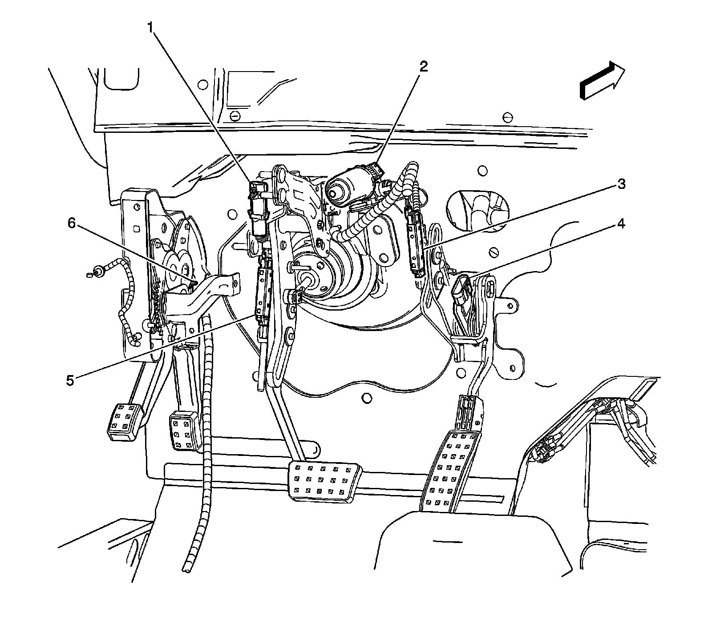

Pedal Positioning System: Locations
Instrument Panel/Center Console Component Views
Park Brake Switch, Brake Pedal and Accelerator Pedal Position Sensors (LHD)
Pedal Switches and Sensors:

1 - Park Brake Switch
2 - Brake Pedal Position Sensor
3 - Accelerator Pedal Position (APP) Sensor
4 - Left Front Floor Panel
Adjustable Pedal Position Sensors and Motors (JF4) - (LHD)

1 - Adjustable Brake Pedal Position Sensor Connector (JF4)
2 - Adjustable Pedal Motor (JF4)
3 - Adjustable Accelerator Pedal Position Sensor (JF4)
4 - Accelerator Pedal Position (APP) Sensor (JF4)
5 - Adjustable Brake Pedal Position Sensor (JF4)
6 - Park Brake Switch
Park Brake, Brake Fluid Level Switches and Pedal Position Sensors (LHD)
Brake And Brake Fluid Level Switches:

1 - Brake Fluid Reservoir
2 - Brake Fluid Level Switch
3 - Brake Fluid Level Switch Connector
4 - Adjustable Brake Pedal Position Sensor Connector (JF4)
5 - Adjust Pedal Motor (JF4)
6 - Adjustable Accelerator Pedal Position Sensor (JF4)
7 - Accelerator Pedal Position (APP) Sensor (JF4)
8 - Adjustable Brake Pedal Position Sensor (JF4)
9 - Park Brake Switch
Park Brake, Brake Fluid Level Switches and Pedal Position Sensors (RHD)
Hydraulic Brake Components:

1 - Brake Fluid Reservoir
2 - Brake Fluid Level Switch
3 - Adjustable Accelerator Pedal Position Sensor (JF4)
4 - Adjustable Pedal Motor (JF4)
5 - Accelerator Pedal Position (APP) Sensor
6 - Park Brake Switch
7 - Adjustable Brake Pedal Position Sensor (JF4)